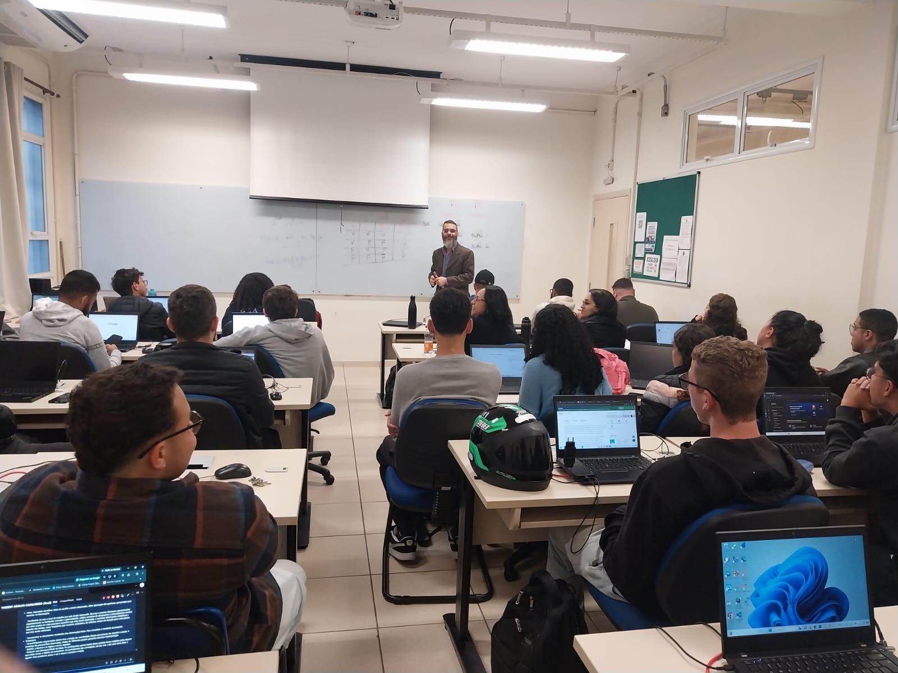
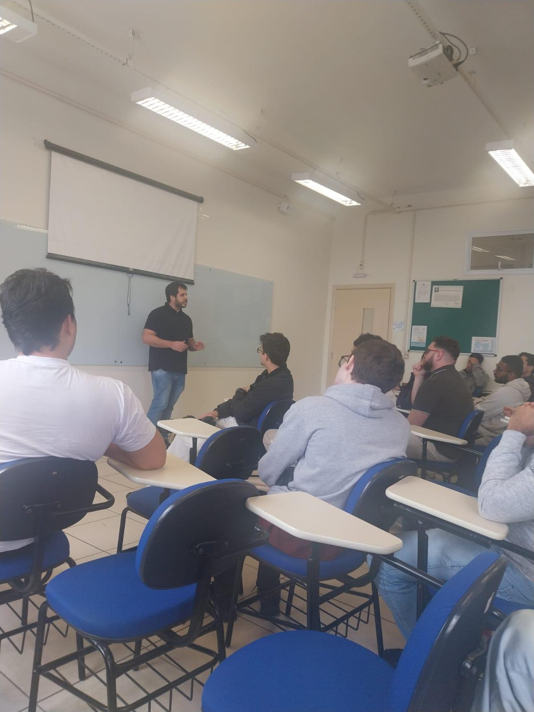

Aula 1 - Introdução
Data: 05/08/2026
Nessa a aula a professora somente explicou a ementa da materia dela de algoritimos.
Desenvolvimento de Software Multiplataformas
Fatec Indaiatuba
Algoritmos e Lógica de Programação
.jpg)
Meu nome é Lucas Silva De Sá sou um estudante de Desenvolvimento de Software Multiplataforma (DSM) na Fatec Indaiatuba, e atualmente estou desenvolvendo meus conhecimentos em programação. Tenho interesse na área de tecnologia e busco evoluir constantemente por meio das aulas, projetos e atividades práticas. Este portfólio tem como objetivo registrar minha evolução e os conhecimentos adquiridos durante minha formação.
Github: Meu github
Data: 05/08/2026
Nessa a aula a professora somente explicou a ementa da materia dela de algoritimos.
Data: 12/08/2026
Nessa a aula a professora explicou o que é algorimos e passou alguns exercicios de fixação e proposto.
Data: 19/08/2026
Nessa a aula a professora explicou o que é algorimos e passou alguns exercicios de fixação e proposto.Nessa a aula a professora explicou o que é o visualg e alguns comandos e ja passou tambem uma lista de exercicio. E tambem iniciou no Python e tambem passou uma lista de exercicios.
Data: 26/08/2026
Nessa a aula a professora explicou o que é algorimos e passou alguns exercicios de fixação e proposto.Nessa a aula a professora explicou o que é o visualg e alguns comandos e ja passou tambem uma lista de exercicio. E tambem iniciou no Python e tambem passou uma lista de exercicios.
Data: 02/09/2026
Nessa a aula teve continuação da apresentação e depois dela a professora passou a instrução para a criação do portifolio.
Data: 09/09/2026
Nessa aula teve duas visitas:
Data: 16/09/2026
Nessa aula a professora tirou duvidas do portifolio e da avaliação.
Data: 12/08/2026
Nessa atividades foi so para trabalha nossa logica com alguns problemas.
EnunciadosData: 19/08/2026
Nessa atividade teremos 20 exercicios sendo 10 de VisuALG e 10 em Python.
OBS: Como podia criar seus propios algoritimos acabei nao utilizando enunciados.
Data: 16/09/2026
Nessa atividade vera os exercicios propostos do livro.
Enunciados e RespostasData: 16/09/2026
Nessa atividade devemos resumir o capitulo 3 do livro e colocar 4 exemplos.
Resumo e ExemplosMinha reflexão sobre essa atividade é que ela é boa, pois apresenta algoritmos sem códigos, o que facilita a compreensão do conteúdo.
Minha reflexão é que, como iniciamos com o Visualg, que é em português, fica mais fácil compreender a lógica de programação. Além disso, o Python também se torna mais fácil de entender depois de praticarmos no Visualg.
Minha reflexão sobre este capítulo é que aprendi conceitos importantes da programação, como os tipos de dados, operadores, variáveis e os comandos “leia” e “escreva”. Esses conhecimentos ajudam a entender melhor como os algoritmos funcionam.
Minha reflexão sobre este capítulo é que aprendi como os algoritmos podem seguir sequências, tomar decisões e repetir ações. Entendi melhor como funcionam as estruturas de seleção e repetição, que são importantes para criar algoritmos mais completos e organizados.
A aula mostrou que programação e matemática estão conectadas, pois as estruturas de condição ajudam a desenvolver um pensamento lógico. Assim, aprender algoritmos não é apenas programar, mas também aprender a tomar decisões de forma mais organizada.

Na palestra do samuel ele tirou todas as nossas duvidas sobre o mercado de trabalho.
Perfil do Samuel